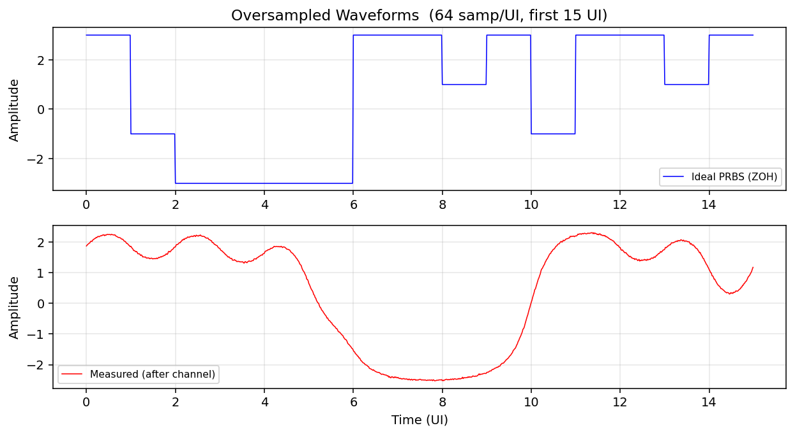
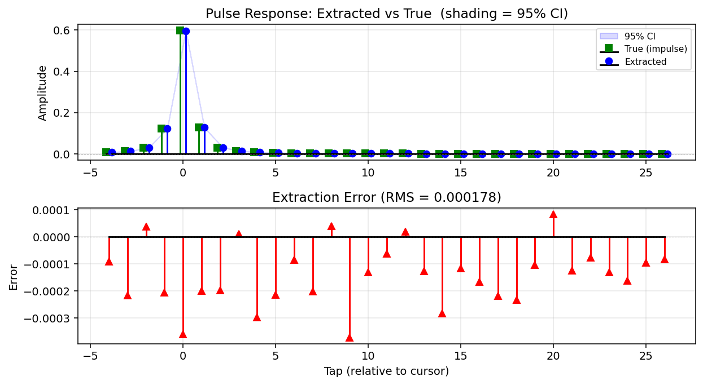
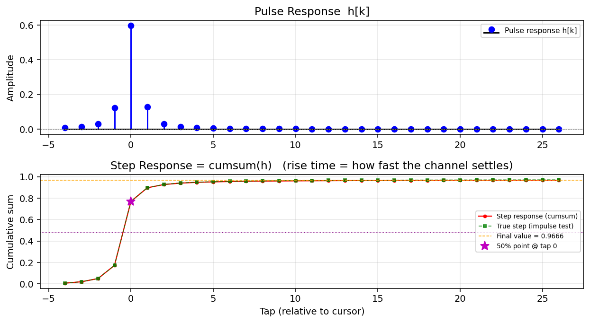
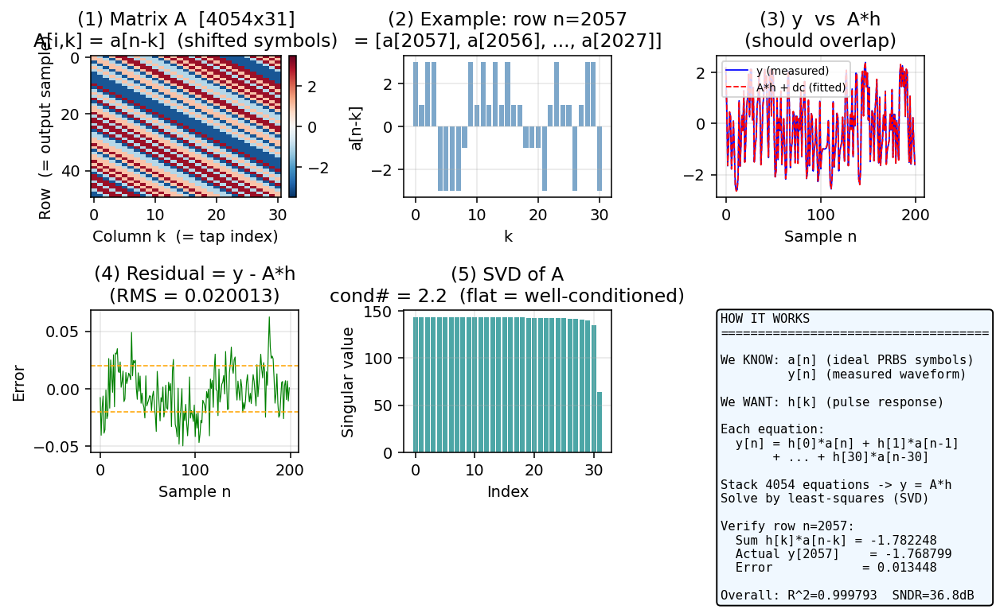
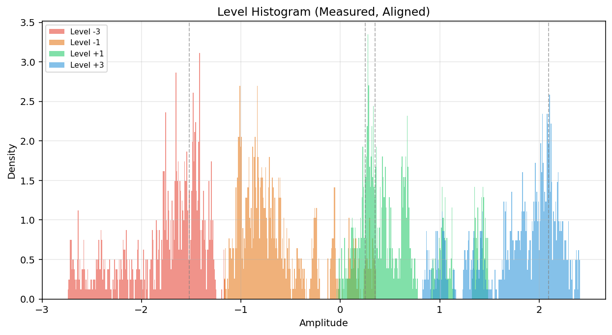

PAM4 Channel Pulse Response Extraction
a[n] (no ISI) + measured waveform y[n] (with ISI)Find: channel pulse response
h[k]Verify:
conv(a, h) ≈ y, and FFT(h) ≈ channel frequency response
Pipeline
a[n], no ISI
H(f)
y[n], has ISI
y = A·h
Tab: Waveform — Three-Signal Comparison

Upper plot: three lines
| Color | Name | Source | What to look for |
|---|---|---|---|
| Blue | Ideal PRBS | Known input pattern a[n] | Sharp levels at {-3,-1,+1,+3}, no ISI |
| Red | Measured | After loss channel | Levels compressed, transitions slow, ISI visible |
| Green dashed | Fitted = conv(a, h) | Symbols convolved with extracted pulse | Should overlap red line if fit is correct |
Lower plot: Error = Measured − Fitted
Should look like white noise (random, no structure). RMS shown in title. If periodic patterns appear, increase tap count.
Oversampled View

The Waveform (OS) tab shows the same signals at 64 samples/UI, revealing the full analog-like transition shapes. Upper = ideal ZOH square wave, lower = channel-distorted waveform with slower edges.
Tab: Eye Diagram

| Feature | Good eye | Bad eye |
|---|---|---|
| Vertical opening | 3 clear diamond openings | Small or closed |
| Horizontal width | Wide, most of UI | Narrow, only at center |
| Level separation | 4 horizontal bands clearly separated | Blurred, overlapping |
| Crossing spread | Tight (low jitter) | Wide (high jitter) |
Tab: Pulse Response

Upper plot: Extracted vs True
| Color | Name | Source |
|---|---|---|
| Blue • | Extracted | Linear fit result h[k] |
| Green ◼ | True (impulse test) | Ground truth: single impulse through same channel |
They should overlap. The light blue shading is the 95% confidence interval.
Tap meanings
| Tap | Name | Meaning | Ideal |
|---|---|---|---|
| h[cursor] | Main cursor | Current symbol's contribution (largest tap) | → 1.0 |
| h[cursor−1,2] | Pre-cursors | Future symbols leaking into current output | → 0 |
| h[cursor+1,2,...] | Post-cursors | Past symbols leaking (ISI) | → 0 |
Confidence Interval
95% CI = h[k] ± 1.96 × √Cov[k,k]. Narrow CI = reliable tap. Wide CI = noise-dominated. For PRBS, all taps have equal CI width because ATA ≈ constant × I.
Tab: Step Response

| Feature | What it tells you |
|---|---|
| Final value | DC gain of the system. Ideal = 1.0 (lossless) |
| 50% point (purple star) | Number of taps to reach half of final value → group delay indicator |
| Rise slope | Steeper = higher bandwidth, faster transitions |
| Settling speed | How many taps until stable? Slow settling = severe ISI |
| Overshoot / ringing | Exceeds final value then returns = channel has peaking |
Tab: AC Response

Three lines
| Color | Name | What it includes |
|---|---|---|
| Blue solid | Extracted |G(f)| | Channel + ZOH sinc + aliasing (actual 1-sps system response) |
| Green dashed | True pulse (impulse test) | Same as above (ground truth) |
| Red dotted | Pure channel H(f) | Only the channel you defined (no sinc, no aliasing) |
Red differs from blue/green → this is expected, because the 1-sps pulse includes ZOH sinc shaping and downsampling aliasing.
Why Extracted ≠ Pure Channel
The 1-sps pulse response spectrum includes three effects:
−3.9 dB @ Nyq
H(f)
sidelobes fold back
Tab: Linear Fit — Six Panels Explained

(1) Matrix A heatmap
The convolution (Toeplitz) matrix. Each row is the symbol sequence shifted by one position. Red = +3, blue = −3. Diagonal stripes = Toeplitz structure.
Look for: Clear diagonal stripes (correct structure), random color distribution (good PRBS randomness).
(2) One-row example
A single row extracted from A as a bar chart. Each bar = a[n−k], the symbol value that h[k] multiplies in one equation.
(3) y vs A·h
Blue = measured y[n], red dashed = model prediction A·ĥh + dc. The closer they overlap, the better the fit.
Quantified by R²: 0.9999 = excellent, <0.99 = needs investigation.
(4) Residual = y − A·h
Should look like white noise. Orange dashed lines = ±RMS. Periodic patterns in the residual → increase tap count. Low-frequency drift → enable DC offset fitting.
(5) SVD singular values
Flat bars = well-conditioned (all directions equally well-determined). Condition number = σmax/σmin. PRBS typically gives cond ≈ 2.2 (excellent).
(6) Summary text
Model formula, matrix size, condition number, one-row verification, R², and SNDR at a glance.
Tab: Histogram

Distribution of measured 1-sps samples, color-coded by transmitted symbol level.
- Four groups should be clearly separated (no overlap)
- Width of each distribution = noise + residual ISI
- Equal spacing between groups → RLM ≈ 1.0 (good linearity)
- Severe overlap → channel loss too high, BER will be high
FAQ
Q1: How many taps should I use?
| Channel loss | Recommended taps |
|---|---|
| < 5 dB | 11 – 21 |
| 5 – 15 dB | 21 – 41 |
| > 15 dB | 41 – 101 |
Check the residual: periodic structure = need more taps. Or check if the step response has settled.
Q2: R² is low — what's wrong?
- Increase tap count
- Check alignment (is lag reasonable?)
- Enable DC offset fitting
- If still low → system may be nonlinear (this tool assumes linearity)
Q3: Eye diagram is completely closed
High channel loss closes the eye. This doesn't mean the linear fit is wrong. Reduce channel IL or add equalization (CTLE/DFE) in a real system.
Q4: SNDR is much lower than the noise SNR I set
- Tap count too low (channel tail not captured)
- Edge effects from circular convolution
- Misalignment
Q5: Extracted IL doesn't match the channel I set
The extracted pulse response is the 1-sps equivalent system response, which includes ZOH sinc (−3.9 dB at Nyquist) and downsampling aliasing. Check the AC Response tab: blue/green overlap = correct extraction. The red line (pure channel) is expected to differ.
Channel Loss Models
| Model | Formula | Physical basis | Use case |
|---|---|---|---|
| Linear | IL(f) = ILnyq × f/fnyq | Simplified | Quick simulations |
| Sqrt (skin effect) | IL(f) = ILnyq × √(f/fnyq) | Skin effect: current concentrates at conductor surface, R ∝ √f | Short/medium PCB traces |
| a√f + bf | IL = a√f + b·f | a = skin effect, b = dielectric loss | Full PCB/cable model |
| S-parameter | From .s4p file | Measured or EM simulation | Most accurate |
PRBS Pattern Comparison
| Pattern | Period | Suitable for |
|---|---|---|
| PRBS7 | 127 | Short channels (< 10 taps) |
| PRBS9 | 511 | Medium channels |
| PRBS13 | 8191 | Long channels |
| PRBS15 | 32767 | Very long channels |
| PRBS31 | 2.1×109 | BER testing |
Rule of thumb: N (symbols) ≥ 10 × L (taps). For L=31, one PRBS9 period (511) is sufficient.
PRBSQ9 for PAM4: two decorrelated PRBS9 sequences form MSB/LSB, ensuring all 4 levels are exercised uniformly.
Mathematical Reference
Convolution model
Least squares
SVD solution
A = U · Σ · V^T
h = V · Σ^{-1} · U^T · yConfidence interval
Why PRBS works well
PRBS autocorrelation: R[0]=5, R[k≠0]≈0
⇒ A^T A ≈ 5N · I (diagonal)
⇒ cond(A) ≈ 1 (ideal conditioning)SNDR
RLM
GUI Quick Start
python gui.py| Mouse action | Effect |
|---|---|
| Scroll wheel | Zoom in/out centered on cursor |
| Right-click drag | Rectangle zoom |
| Double right-click | Reset to original scale |
Validation checklist
| Item | Expected | If not met |
|---|---|---|
| R² | ≥ 0.999 | Increase taps or check alignment |
| SNDR | ≈ noise SNR | Model insufficient or nonlinear |
| Fitted vs Measured | Overlap | Not enough taps |
| Pulse: blue vs green | Overlap | Fit problem |
| Condition # | ≈ 2 | Pattern not random enough |
| Residual | White noise | Structure = increase taps |